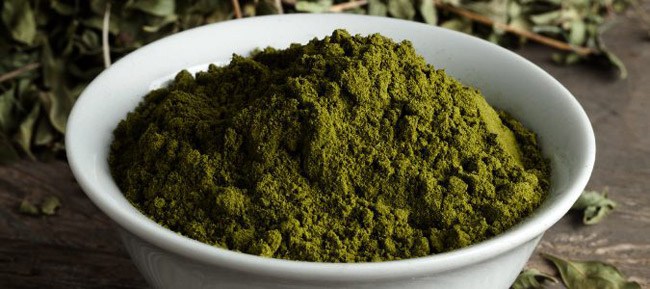

La henna es una pasta hecha de ramas y hojas machacadas de la planta de henna (Lawsonia inermis), que es un pequeño arbusto con flores. La pasta también se puede hacer a partir de hojas secas de la planta mediante su mezcla con agua caliente. Después de que la henna se ha aplicado, la pasta se seca en 5 o 10 minutos. Posteriormente se rocia el tatuaje con una mezcla de jugo de limón y azúcar para que el diseño se adhiera mejor a la piel y tenga mejor color.

El tatuaje es temporal, cuando esta pasta se aplica en la piel y transcurren unas horas, deja una mancha de un color que va del naranja al marrón oscuro, la cual desaparece al cabo de entre 7 y 14 días.
La henna jamás es negra. Cuando alguien dice que hace henna que producirá el color negro, simplemente da la vuelta y sal corriendo. Lo más probable es que esté utilizando algunos aditivos químicos (como PPD) para teñir el cabello u otros objetos y que pueden ser perjudiciales para la piel. La oscuridad depende de tu piel y la parte del cuerpo donde se aplique la henna.
En absoluto, no son dolorosos. En los tatuajes de henna no se inyecta tinta por debajo de la piel, los dibujos se hacen sobre la piel.
 Visitar tatuajes permanentesEsta es una página experimental